Evaluate each expression when \(x=-2\):
(a) \(3x^2-5\) (b) \(-4x+7\).
Solve each equation:
(a) \(2x-9=5\) (b) \(x^2-16=0\).
Use the graph of the line to estimate the value of \(y\) when \(x=2\), and the value of \(x\) when \(y=-3\).
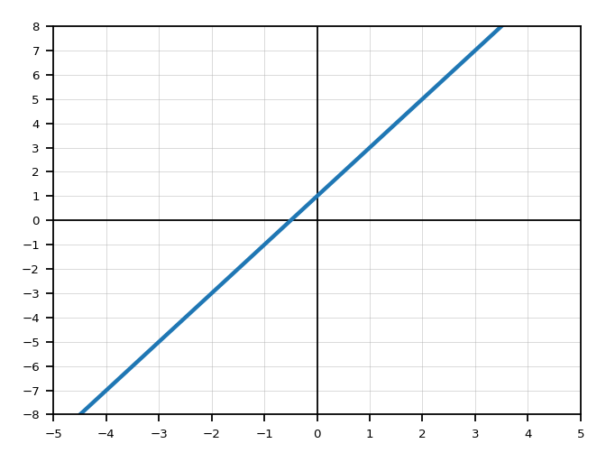
A table has inputs \(-1,0,1,2\) and outputs \(5,3,1,-1\). Write a rule that could generate the outputs, then use it to predict the output for \(x=4\).
Let \(f(x)=3x-7\). Find \(f(-2)\), \(f(0)\), and \(f(5)\).
Use the graph of \(g(x)\) to solve \(g(x)=5\). Explain how the graph shows the solution(s).
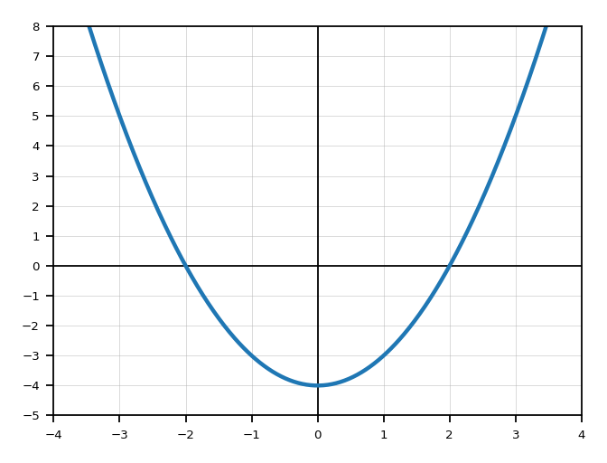
Spiral Unit A: For \(q(x)=(x-4)(x+2)\), identify the zeros and the axis of symmetry.
Spiral Unit B: Simplify \(\dfrac{x^7y^{-2}}{x^3y^4}\) using positive exponents.
The graph of \(f\) is shown. Estimate all solutions to \(f(x)=1\), then explain whether \(f(1)=1\).
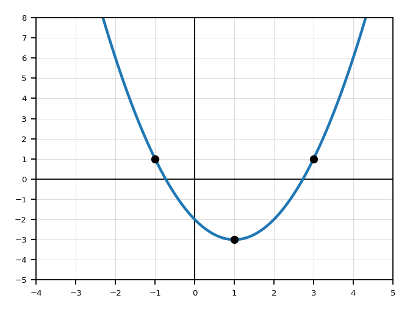
A student says \(h(-3)=h(3)\) for every function because \(-3\) and \(3\) are opposites. Give a counterexample using \(h(x)=2x+1\), and explain the mistake.
Spiral Unit A: A quadratic has zeros \(-2\) and \(6\), and opens upward. Without writing the full equation, explain where its minimum must occur.
Spiral Unit B: A phone plan charges \($25\) plus \($15\) per GB of data. Write a function for the cost and explain what the input and output represent.
Solve and graph mentally: \(3x-4<11\). Write the solution as an inequality.
Explain the difference between \(x<5\) and \(x\le 5\). Give one number that is in one set but not the other.
List three values that satisfy \(-3
Use the number-line graph to write the set in words and inequality notation.
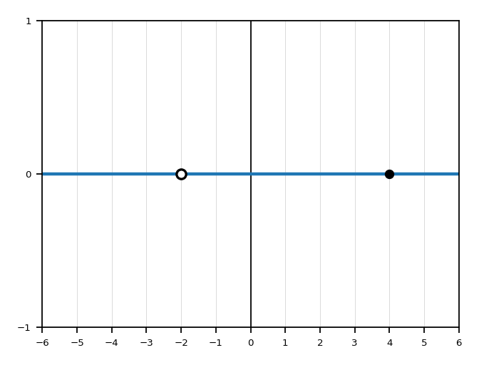
Write \(-4\le x<7\) in interval notation. Explain why one endpoint uses a bracket and the other uses a parenthesis.
Write \((-\infty,3]\) as an inequality. Then describe the graph on a number line.
Spiral Unit A: For \(y=-2(x-1)^2+8\), state the vertex, whether it is a maximum or minimum, and the range.
Spiral Unit B: Determine the values of \(x\) that make \(\sqrt{x+5}\) real.
A student writes \([-2,5)\) for the inequality \(-2
The graph shows a compound set. Write it in interval notation and inequality notation, then explain the isolated point.
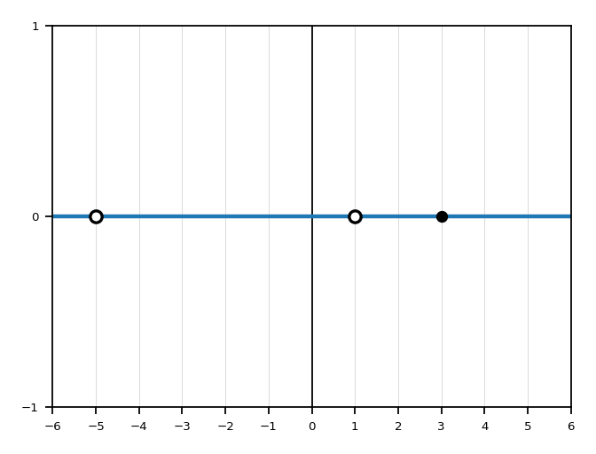
Spiral Unit A: A quadratic has range \(y\le 9\) and axis of symmetry \(x=-3\). What can you conclude about the vertex and opening direction? Explain.
Spiral Unit B: Compare \(x^{1/2}\) and \(x^2\). For which real \(x\)-values is each expression defined?
For \(f(x)=2x+5\), explain why every real number can be used as an input.
Use the graph to identify the leftmost point and explain how it affects the domain.
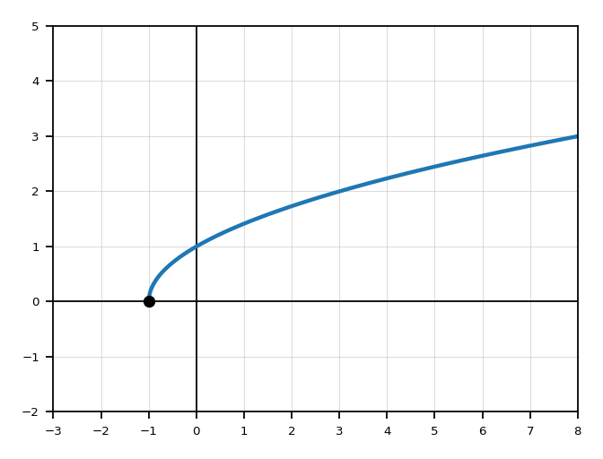
Evaluate whether each input is allowed for \(g(x)=\sqrt{x-4}\): \(x=0\), \(x=4\), \(x=9\).
A table has inputs \(-2,-1,0,1,2\) and outputs \(4,1,0,1,4\). State the listed domain and listed range.
Determine the domain and range of the graphed function. Use interval notation.
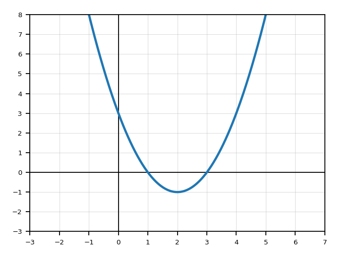
Find the domain of \(h(x)=\sqrt{2x-6}\). Show the inequality that creates the restriction.
Spiral Unit A: Find the vertex and range of \(y=2(x+3)^2-5\).
Spiral Unit B: Simplify \(\sqrt{72}\) and explain which perfect-square factor you used.
The graph is shown. Determine the domain and range, then explain why the range has an upper bound.
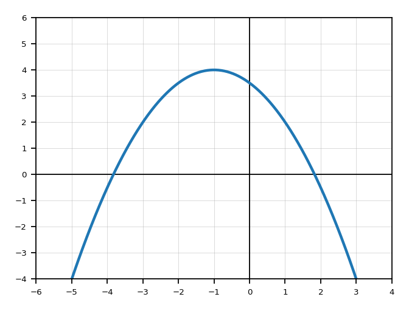
A student says the domain of \(f(x)=\sqrt{x+2}\) is \([2,\infty)\) because the 2 is inside the radical. Correct the mistake.
Spiral Unit A: A projectile has height \(h(t)=-16t^2+64t+5\). Explain what a reasonable domain means in this situation.
Spiral Unit B: The line through \((-2,7)\) and \((4,-5)\) models a relationship. Find the slope and explain its meaning as a rate of change.
Describe the difference between \(y=x^2\) and \(y=(x-3)^2+4\).
Use the graph of the parent function \(f(x)=|x|\). What point is the vertex/corner?
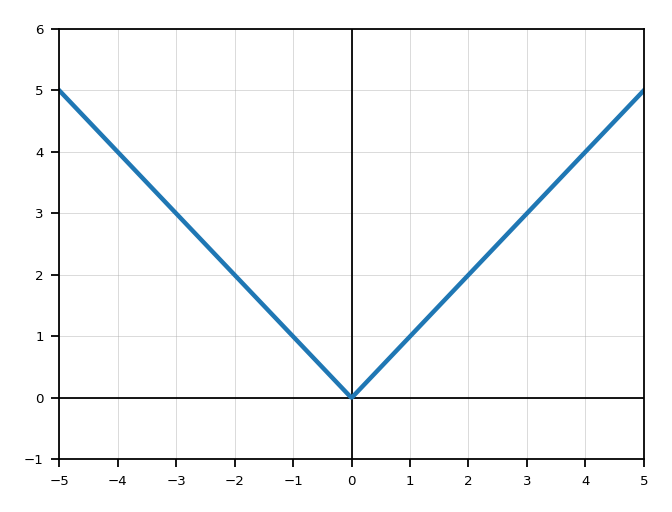
For each expression, describe the transformation from \(f(x)\):
(a) \(f(x)+6\) (b) \(f(x-2)\) (c) \(-f(x)\).
A graph is shifted left 5 and down 1. If the original point \((2,3)\) is on the graph, where does that point move?
Let \(g(x)=f(x+4)-2\). Describe the transformation from \(f\) to \(g\).
Use the graph to write a transformation of \(f(x)=|x|\).
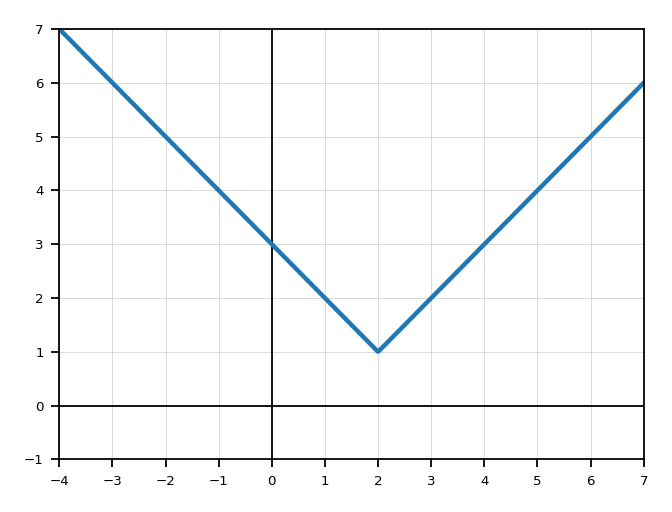
Spiral Unit A: Write a quadratic in vertex form with vertex \((-2,5)\) that opens downward and has vertical stretch factor \(3\).
Spiral Unit B: Rewrite \(\sqrt[3]{x^5}\) using rational exponents, then identify the root and the power.
The graph shown is a transformation of \(f(x)=|x|\). Write a possible equation and describe each transformation.
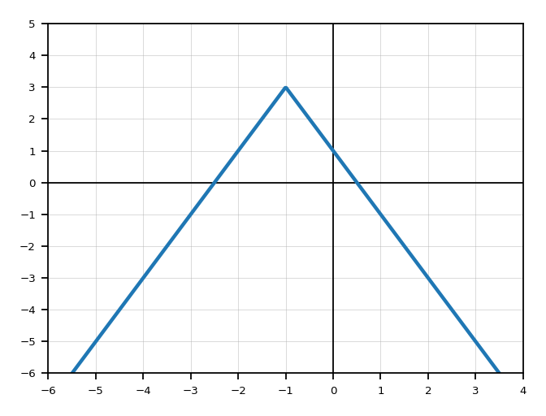
A student says \(f(x-6)\) shifts the graph left 6 because there is a minus sign. Explain the mistake.
Spiral Unit A: Compare \(y=2(x-1)^2-4\) and \(y=\frac12(x-1)^2-4\). What is the same and what changes?
Spiral Unit B: A line has slope \(-3\) and passes through \((2,7)\). Write an equation and explain how the slope appears in the equation.
In your own words, explain the difference between \(x=2\) and \(x\) approaching 2.
From the graph, estimate the value the function approaches as \(x\) approaches 1 from the left. Then identify the actual function value at \(x=1\).
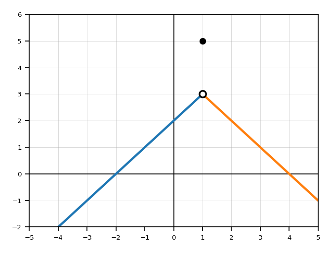
A table gives values near \(x=3\): \(f(2.9)=5.8\), \(f(2.99)=5.98\), \(f(3.01)=6.02\), \(f(3.1)=6.2\). What value does \(f(x)\) appear to approach?
Explain what an open circle and a closed circle usually mean on a graph.
Use the graph to determine \(\lim_{x\to0^-}f(x)\), \(\lim_{x\to0^+}f(x)\), and whether \(\lim_{x\to0}f(x)\) exists.
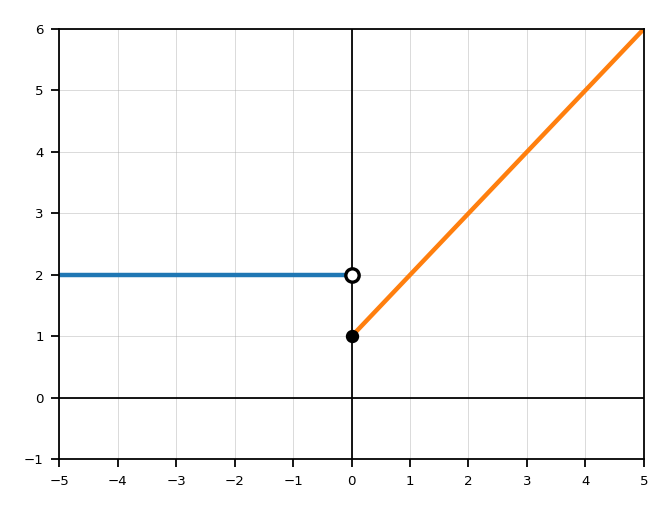
A function has \(\lim_{x\to4^-}f(x)=7\) and \(\lim_{x\to4^+}f(x)=7\), but \(f(4)=-2\). Does \(\lim_{x\to4}f(x)\) exist? Explain.
Spiral Unit A: Use the discriminant to decide how many real solutions \(x^2-6x+13=0\) has.
Spiral Unit B: Determine the domain of \(r(x)=\sqrt{10-2x}\).
Use the graph to determine the left-hand and right-hand limits at \(x=-1\) and \(x=2\). State where the two-sided limit exists.
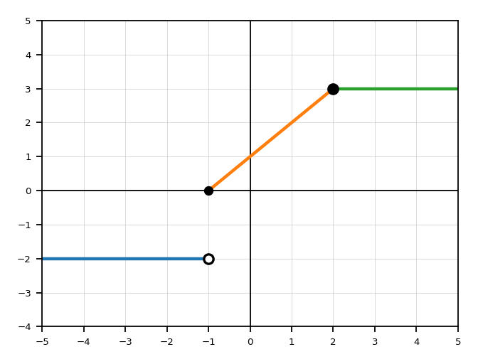
Create a short explanation for this statement: “A limit can exist even when the function value is different.” Include a small example in words or symbols.
Spiral Unit A: A quadratic model has zeros \(1\) and \(7\). Explain why the maximum or minimum occurs at \(x=4\).
Spiral Unit B: A linear function is shown by the table \((0,4),(2,10),(4,16)\). Find the equation and explain how the table shows constant rate of change.